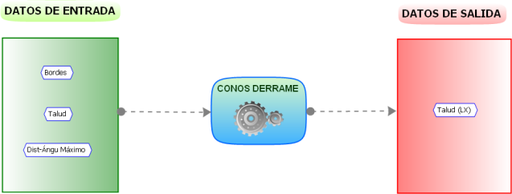
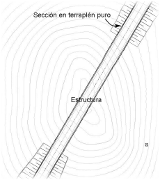
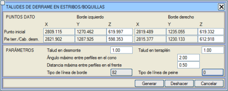

| |
|
YAKLAŞIM DOLGUSU
|
Bu araç, paftalarda gösterimi amacıyla yaklaşım dolgularının (sanat yapılarının kenarayakları ve tünel ağızları) otomatik olarak oluşturulmasını sağlar. 
Bu yardımcı programın daha iyi anlaşılması için, her iki tarafı da dolgu olan, mükemmel bir şekilde çizilmiş ve içinde bir sanat yapısı tanımlanmış bir güzergah projesi kesiti örnek olarak verilecektir. Dört nokta ile tanımlanır (sağ/sol kriteri sanat yapısına doğru ilerleme yönündedir, her zaman sanat yapısına girerken), platform kenarının noktaları ve her biriyle birlikte aynı enkesitin dolgu şev eteği veya yarma şev başı noktaları. Ayrıca kenarayak cephesindeki dolgu şevi de tanımlanır. Yan konilerdeki şevler, enkesitin başlangıç şevi ile cephe için tanımlanan şev arasında doğrusal olarak değişecektir. Ayrıca konilerde ve cephede enkesit çıkarmak için maksimum açı ve maksimum mesafe ile şev taramaları ve şev eteği/başı çizgileri için çizgi tipleri de tanımlanır. [Oluştur] komutu, bu yaklaşım dolgularının (viyadük kenarayakları veya tünel ağızları için) geometrisini belirtilen çizgi tipleriyle oluşturur. 
Bu yüzeyi [Geri Al] butonu ile silmek mümkündür. Konideki enkesitler arası maksimum açı, şevin dolguya karşılık gelen şevden cephe şevine kadar doğrusal olarak değiştiği köşelerdeki bilgi yoğunluğunu (daha büyük açı) veya azlığını (daha küçük açı) yönetir. Cephedeki enkesitler arası maksimum mesafe, cephe şevi için analiz ve gösterim enkesitleri arasındaki aralığı atar. Bu mesafe ne kadar küçük olursa, cephe şevini tanımlamak için o kadar fazla veri yoğunluğu olacaktır.
Kenar çizgisi ve şev taraması için çizgi tipi kutucukları, varsayılan olarak sırasıyla L82 ve L0'dır. Bir yarma durumunda, olası bir tünel ağzı ile, aynı şekilde işlem yapılır ve ilgili yarma şevinin ilk ve son noktası verilir. |